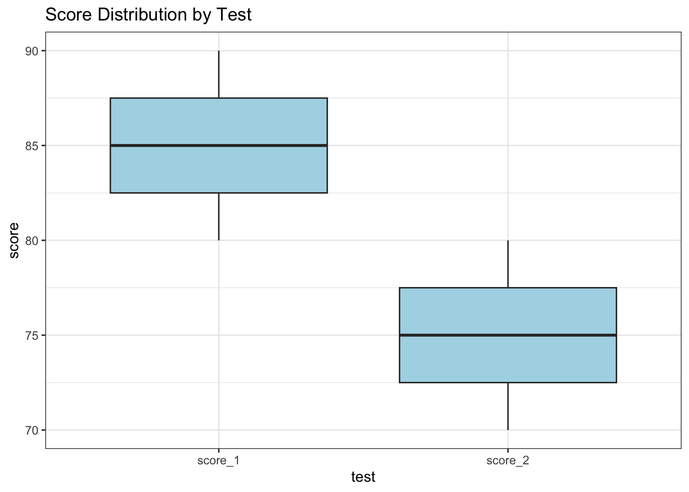
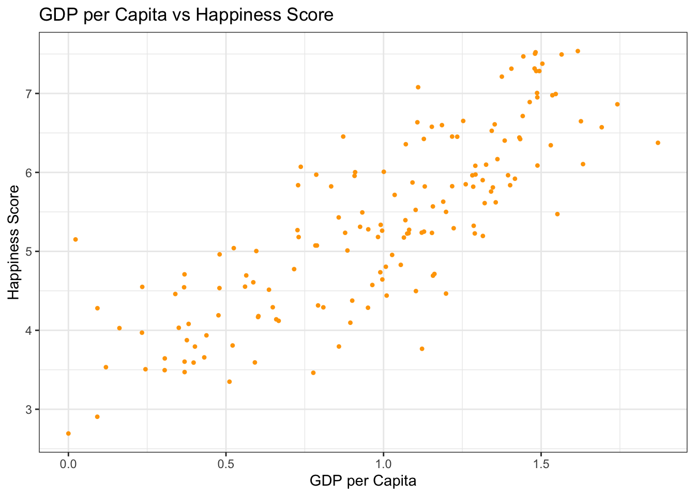

Data cleaning with dplyr and tidyr: Handling missing values, data reshaping, and filtering.
Exploratory Data Analysis (EDA): Summary statistics, data visualization, and feature engineering.
Hands-on exercises to perform data cleaning and EDA on a dataset collected during Day 1.
8.0.2 Outcome
Participants will be able to clean data and conduct exploratory analyses to derive insights.
8.1 Introduction to Data Cleaning
Data cleaning is an essential step in preparing your dataset for analysis. The dplyr and tidyr packages in R provide powerful tools for transforming and tidying data.
8.1.1 Example: Handling Missing Values
Code
library(dplyr)
Attaching package: 'dplyr'
The following objects are masked from 'package:stats':
filter, lag
The following objects are masked from 'package:base':
intersect, setdiff, setequal, union
Code
# Sample dataset with missing valuesdata <-tibble(id =1:5,value =c(10, NA, 30, NA, 50))# Remove rows with missing valuesclean_data <- data %>%filter(!is.na(value))# Display cleaned dataclean_data
# A tibble: 3 × 2
id value
<int> <dbl>
1 1 10
2 3 30
3 5 50
8.1.2 Example: Reshaping Data
Code
library(tidyr)# Sample dataset for reshapingwide_data <-tibble(id =1:3,score_1 =c(80, 85, 90),score_2 =c(70, 75, 80))# Convert from wide to long formatlong_data <- wide_data %>%pivot_longer(cols =starts_with("score"), names_to ="test", values_to ="score")# Display reshaped datalong_data
8.2 Introduction to Exploratory Data Analysis (EDA)
EDA involves summarizing the main characteristics of a dataset often using visual methods. It helps in understanding the patterns, anomalies, and relationships within the data.
library(ggplot2)# Visualize the distribution of scoresggplot(long_data, aes(x = test, y = score)) +geom_boxplot(fill ="lightblue") +labs(title ="Score Distribution by Test") +theme_bw()

8.3 Hands-On Exercise
8.3.1 Exercise 1: Clean a Dataset
Use a dataset collected during Day 1.
Identify and handle missing values using dplyr.
Code
# Example code structure for cleaning a datasetdataset <-tibble(id =c(1, 2, NA, 4),value =c(10, NA, 30, NA))cleaned_dataset <- dataset %>%drop_na() # Remove rows with any missing valuescleaned_dataset
# A tibble: 1 × 2
id value
<dbl> <dbl>
1 1 10
8.3.2 Exercise 2: Perform EDA
Generate summary statistics for your cleaned dataset.
Create visualizations to explore relationships in the data using ggplot2.
Code
# Example code structure for EDAeda_summary <- cleaned_dataset %>%summarise(mean_value =mean(value))ggplot(cleaned_dataset, aes(x = id, y = value)) +geom_point() +labs(title ="Value by ID") +theme_bw()
Description: This dataset contains information about three species of penguins (Adélie, Gentoo, and Chinstrap) from the Palmer Archipelago in Antarctica. It includes variables such as species, island, bill length, bill depth, flipper length, body mass, and sex.
Exercises: - Data Cleaning: Check for missing values and handle them appropriately. For example, decide whether to impute missing values or remove rows with missing data. - Exploratory Analysis: Create visualizations to compare the physical characteristics (e.g., bill length vs. body mass) among the three species of penguins. - Statistical Analysis: Perform a t-test to determine if there are significant differences in body mass between the species.
Code
# Load necessary librarieslibrary(palmerpenguins)library(ggplot2)library(dplyr)# View the datasethead(penguins)
# A tibble: 6 × 8
species island bill_length_mm bill_depth_mm flipper_length_mm body_mass_g
<fct> <fct> <dbl> <dbl> <int> <int>
1 Adelie Torgersen 39.1 18.7 181 3750
2 Adelie Torgersen 39.5 17.4 186 3800
3 Adelie Torgersen 40.3 18 195 3250
4 Adelie Torgersen NA NA NA NA
5 Adelie Torgersen 36.7 19.3 193 3450
6 Adelie Torgersen 39.3 20.6 190 3650
# ℹ 2 more variables: sex <fct>, year <int>
Code
# Data cleaning: Remove rows with NA valuescleaned_penguins <-na.omit(penguins)# Exploratory analysis: Visualize bill length vs. body mass by speciesggplot(cleaned_penguins, aes(x = bill_length_mm, y = body_mass_g, color = species)) +geom_point() +labs(title ="Bill Length vs Body Mass of Penguins",x ="Bill Length (mm)",y ="Body Mass (g)") +theme_bw()
Description: This famous dataset contains information about the passengers on the Titanic, including their survival status, age, class, sex, fare paid, and more.
Exercises: - Data Cleaning: Identify and handle missing values in the dataset. For example, impute missing ages using the median or mean age based on passenger class. - Exploratory Analysis: Analyze survival rates based on different factors such as gender and passenger class. Create visualizations to illustrate your findings. - Feature Engineering: Create a new feature that categorizes passengers into age groups (e.g., child, adult) and analyze survival rates based on this new feature.
Code
# Load necessary librarieslibrary(tidyverse)
── Attaching core tidyverse packages ──────────────────────── tidyverse 2.0.0 ──
✔ forcats 1.0.0 ✔ readr 2.1.5
✔ lubridate 1.9.3 ✔ stringr 1.5.1
✔ purrr 1.0.2 ✔ tibble 3.2.1
── Conflicts ────────────────────────────────────────── tidyverse_conflicts() ──
✖ dplyr::filter() masks stats::filter()
✖ dplyr::lag() masks stats::lag()
ℹ Use the conflicted package (<http://conflicted.r-lib.org/>) to force all conflicts to become errors
Code
# Load Titanic datasettitanic_data <-read.csv("https://raw.githubusercontent.com/datasciencedojo/datasets/refs/heads/master/titanic.csv")# Data cleaning: Impute missing ages with median agetitanic_data$Age[is.na(titanic_data$Age)] <-median(titanic_data$Age, na.rm =TRUE)# Exploratory analysis: Survival rate by genderggplot(titanic_data, aes(x = Sex, fill =factor(Survived))) +geom_bar(position ="fill") +labs(title ="Survival Rate by Gender",y ="Proportion",fill ="Survived") +theme_bw()
Description: This dataset includes happiness scores for countries around the world based on various factors such as GDP per capita, social support, life expectancy, freedom to make life choices, generosity, and perceptions of corruption.
Exercises: - Data Cleaning: Check for any inconsistencies or missing values in the dataset. Clean the data as necessary. - Exploratory Analysis: Analyze the relationship between GDP per capita and happiness scores using scatter plots. Use regression analysis to model this relationship. - Comparative Analysis: Compare happiness scores across different regions or continents using boxplots.
Code
happiness_data <-read.csv("https://raw.githubusercontent.com/datageneration/nchu/refs/heads/main/datascience/data/2017.csv")# Data cleaning: Check for NA valuessummary(happiness_data)
Country Happiness.Rank Happiness.Score Whisker.high
Length:155 Min. : 1.0 Min. :2.693 Min. :2.865
Class :character 1st Qu.: 39.5 1st Qu.:4.505 1st Qu.:4.608
Mode :character Median : 78.0 Median :5.279 Median :5.370
Mean : 78.0 Mean :5.354 Mean :5.452
3rd Qu.:116.5 3rd Qu.:6.101 3rd Qu.:6.195
Max. :155.0 Max. :7.537 Max. :7.622
Whisker.low GDP.per.capita Family Health..Life.Expectancy.
Min. :2.521 Min. :0.0000 Min. :0.000 Min. :0.0000
1st Qu.:4.375 1st Qu.:0.6634 1st Qu.:1.043 1st Qu.:0.3699
Median :5.193 Median :1.0646 Median :1.254 Median :0.6060
Mean :5.256 Mean :0.9847 Mean :1.189 Mean :0.5513
3rd Qu.:6.007 3rd Qu.:1.3180 3rd Qu.:1.414 3rd Qu.:0.7230
Max. :7.480 Max. :1.8708 Max. :1.611 Max. :0.9495
Freedom Generosity Trust..Government.Corruption.
Min. :0.0000 Min. :0.0000 Min. :0.00000
1st Qu.:0.3037 1st Qu.:0.1541 1st Qu.:0.05727
Median :0.4375 Median :0.2315 Median :0.08985
Mean :0.4088 Mean :0.2469 Mean :0.12312
3rd Qu.:0.5166 3rd Qu.:0.3238 3rd Qu.:0.15330
Max. :0.6582 Max. :0.8381 Max. :0.46431
Dystopia.Residual
Min. :0.3779
1st Qu.:1.5913
Median :1.8329
Mean :1.8502
3rd Qu.:2.1447
Max. :3.1175
Code
# Exploratory analysis: Scatter plot of GDP vs Happiness Scoreggplot(happiness_data, aes(x = GDP.per.capita, y = Happiness.Score)) +geom_point(pch=20, color ="orange") +labs(title ="GDP per Capita vs Happiness Score",x ="GDP per Capita",y ="Happiness Score") +theme_bw()

By following these examples and exercises, participants will gain practical experience in data cleaning and exploratory data analysis using R. This session will enhance their ability to derive meaningful insights from raw datasets.
8.3.4 Recap
Data Cleaning: Introduces techniques for handling missing values and reshaping data using dplyr and tidyr.
Exploratory Data Analysis: Demonstrates how to calculate summary statistics and visualize data patterns with ggplot2.
Exercises: Provides hands-on practice for participants to apply these techniques on real datasets.
Source Code
# Chapter 7: Data Management and Exploratory Data Analysis (EDA)### Key Topics- Data cleaning with `dplyr` and `tidyr`: Handling missing values, data reshaping, and filtering.- Exploratory Data Analysis (EDA): Summary statistics, data visualization, and feature engineering.- Hands-on exercises to perform data cleaning and EDA on a dataset collected during Day 1.### OutcomeParticipants will be able to clean data and conduct exploratory analyses to derive insights.## Introduction to Data CleaningData cleaning is an essential step in preparing your dataset for analysis. The `dplyr` and `tidyr` packages in R provide powerful tools for transforming and tidying data.### Example: Handling Missing Values```{r}library(dplyr)# Sample dataset with missing valuesdata <-tibble(id =1:5,value =c(10, NA, 30, NA, 50))# Remove rows with missing valuesclean_data <- data %>%filter(!is.na(value))# Display cleaned dataclean_data```### Example: Reshaping Data```{r}library(tidyr)# Sample dataset for reshapingwide_data <-tibble(id =1:3,score_1 =c(80, 85, 90),score_2 =c(70, 75, 80))# Convert from wide to long formatlong_data <- wide_data %>%pivot_longer(cols =starts_with("score"), names_to ="test", values_to ="score")# Display reshaped datalong_data```## Introduction to Exploratory Data Analysis (EDA)EDA involves summarizing the main characteristics of a dataset often using visual methods. It helps in understanding the patterns, anomalies, and relationships within the data.### Example: Summary Statistics```{r}# Calculate summary statisticssummary_stats <- clean_data %>%summarise(mean_value =mean(value),median_value =median(value),sd_value =sd(value) )# Display summary statisticssummary_stats```### Example: Data Visualization with ggplot2```{r}library(ggplot2)# Visualize the distribution of scoresggplot(long_data, aes(x = test, y = score)) +geom_boxplot(fill ="lightblue") +labs(title ="Score Distribution by Test") +theme_bw()```## Hands-On Exercise### Exercise 1: Clean a Dataset1. Use a dataset collected during Day 1.2. Identify and handle missing values using `dplyr`.```{r}# Example code structure for cleaning a datasetdataset <-tibble(id =c(1, 2, NA, 4),value =c(10, NA, 30, NA))cleaned_dataset <- dataset %>%drop_na() # Remove rows with any missing valuescleaned_dataset```### Exercise 2: Perform EDA1. Generate summary statistics for your cleaned dataset.2. Create visualizations to explore relationships in the data using `ggplot2`.```{r}# Example code structure for EDAeda_summary <- cleaned_dataset %>%summarise(mean_value =mean(value))ggplot(cleaned_dataset, aes(x = id, y = value)) +geom_point() +labs(title ="Value by ID") +theme_bw()```### Exercises with Real Datasets#### 1. **Penguins Dataset****Source:** [Palmer Penguins Dataset](https://allisonhorst.github.io/palmerpenguins/)**Description:** This dataset contains information about three species of penguins (Adélie, Gentoo, and Chinstrap) from the Palmer Archipelago in Antarctica. It includes variables such as species, island, bill length, bill depth, flipper length, body mass, and sex.**Exercises:** - **Data Cleaning:** Check for missing values and handle them appropriately. For example, decide whether to impute missing values or remove rows with missing data. - **Exploratory Analysis:** Create visualizations to compare the physical characteristics (e.g., bill length vs. body mass) among the three species of penguins. - **Statistical Analysis:** Perform a t-test to determine if there are significant differences in body mass between the species.``` {r}# Load necessary librarieslibrary(palmerpenguins)library(ggplot2)library(dplyr)# View the datasethead(penguins)# Data cleaning: Remove rows with NA valuescleaned_penguins <- na.omit(penguins)# Exploratory analysis: Visualize bill length vs. body mass by speciesggplot(cleaned_penguins, aes(x = bill_length_mm, y = body_mass_g, color = species)) + geom_point() + labs(title = "Bill Length vs Body Mass of Penguins", x = "Bill Length (mm)", y = "Body Mass (g)") + theme_bw()```#### 2. **Titanic Dataset****Source:** [Kaggle Titanic Dataset](https://www.kaggle.com/c/titanic/data)**Description:** This famous dataset contains information about the passengers on the Titanic, including their survival status, age, class, sex, fare paid, and more.**Exercises:** - **Data Cleaning:** Identify and handle missing values in the dataset. For example, impute missing ages using the median or mean age based on passenger class. - **Exploratory Analysis:** Analyze survival rates based on different factors such as gender and passenger class. Create visualizations to illustrate your findings. - **Feature Engineering:** Create a new feature that categorizes passengers into age groups (e.g., child, adult) and analyze survival rates based on this new feature.```{r}# Load necessary librarieslibrary(tidyverse)# Load Titanic datasettitanic_data <-read.csv("https://raw.githubusercontent.com/datasciencedojo/datasets/refs/heads/master/titanic.csv")# Data cleaning: Impute missing ages with median agetitanic_data$Age[is.na(titanic_data$Age)] <-median(titanic_data$Age, na.rm =TRUE)# Exploratory analysis: Survival rate by genderggplot(titanic_data, aes(x = Sex, fill =factor(Survived))) +geom_bar(position ="fill") +labs(title ="Survival Rate by Gender",y ="Proportion",fill ="Survived") +theme_bw()```#### 3. **World Happiness Report****Source:** [World Happiness Report Dataset](https://www.kaggle.com/datasets/unsdsn/world-happiness)**Description:** This dataset includes happiness scores for countries around the world based on various factors such as GDP per capita, social support, life expectancy, freedom to make life choices, generosity, and perceptions of corruption.**Exercises:** - **Data Cleaning:** Check for any inconsistencies or missing values in the dataset. Clean the data as necessary. - **Exploratory Analysis:** Analyze the relationship between GDP per capita and happiness scores using scatter plots. Use regression analysis to model this relationship. - **Comparative Analysis:** Compare happiness scores across different regions or continents using boxplots.``` {r}happiness_data <- read.csv("https://raw.githubusercontent.com/datageneration/nchu/refs/heads/main/datascience/data/2017.csv")# Data cleaning: Check for NA valuessummary(happiness_data)# Exploratory analysis: Scatter plot of GDP vs Happiness Scoreggplot(happiness_data, aes(x = GDP.per.capita, y = Happiness.Score)) + geom_point(pch=20, color = "orange") + labs(title = "GDP per Capita vs Happiness Score", x = "GDP per Capita", y = "Happiness Score") + theme_bw()```By following these examples and exercises, participants will gain practical experience in data cleaning and exploratory data analysis using R. This session will enhance their ability to derive meaningful insights from raw datasets. ### Recap- **Data Cleaning:** Introduces techniques for handling missing values and reshaping data using `dplyr` and `tidyr`.- **Exploratory Data Analysis:** Demonstrates how to calculate summary statistics and visualize data patterns with `ggplot2`.- **Exercises:** Provides hands-on practice for participants to apply these techniques on real datasets.